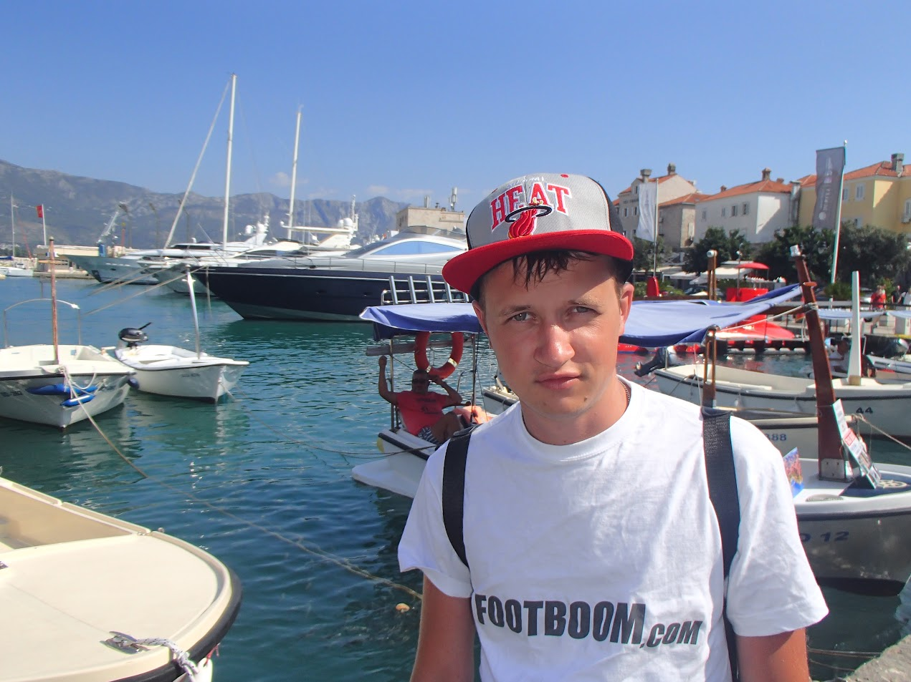
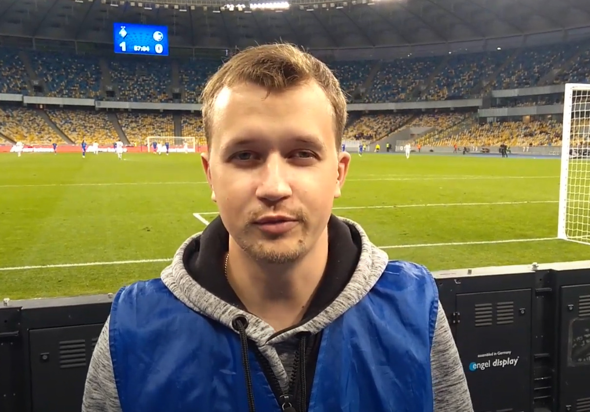
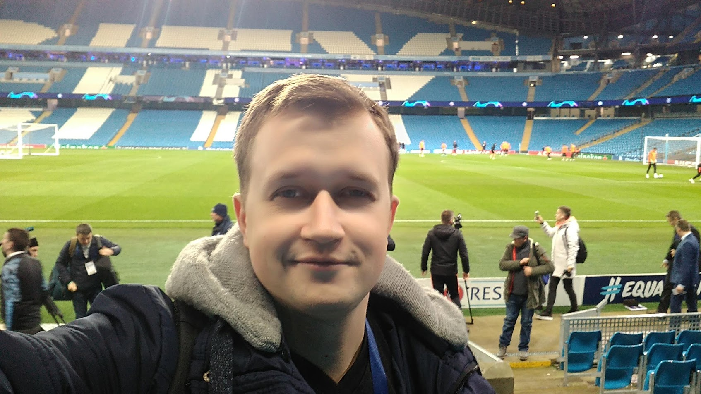
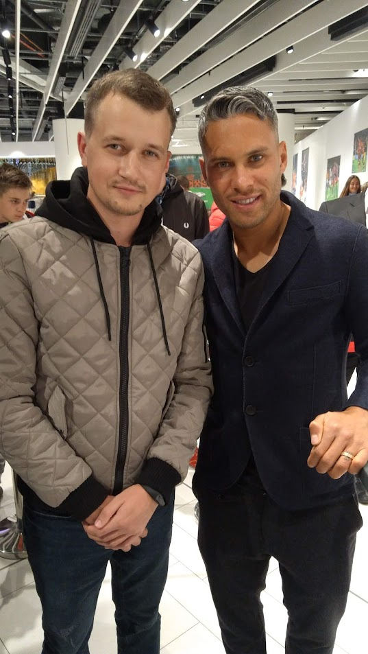
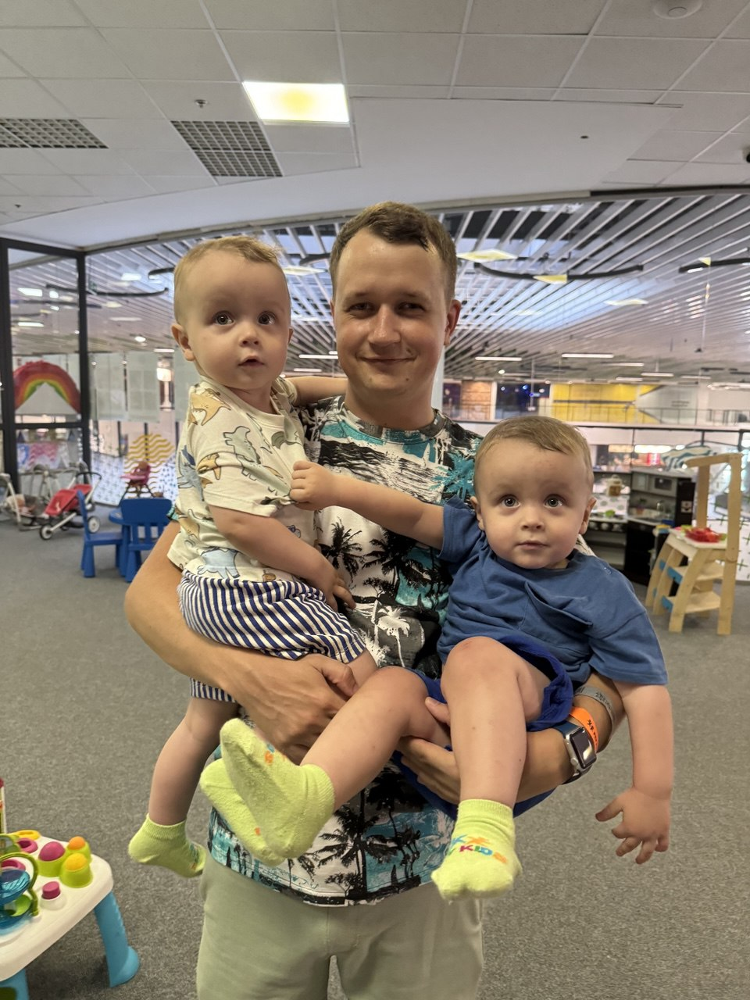

Початок трудової кар’єри
Всім привіт. Мене звати Сергій Євгенович, мені 35 років. Я хочу вас познайомити з тією частиною свого життя, яка стосується роботи. Свій трудовий шлях я почав у 14 років, коли на літніх канікулах займався формовкою склопластикових виробів на трамваї і тролейбуси (більш детально про це розповісти не можу, оскільки і сам вже не пам’ятаю). Подорослішати довелось доволі рано, моя сім’я не мала достатніх фінансових можливостей, а в підлітковому віці вже хотілося мати якісь свої кошти, тому список сумнівних місць роботи перелічити досить складно, бо, мабуть, всього і сам не пригадаю: від роздачі листівок до друку календарів, від гардеробщика в нічному клубі і до дитячого аніматора, звісно різноманітний досвід роботи кур’єром – мастхев… Все це було у моєму житті, коли я паралельно навчався у НПУ імені Драгоманова на денній формі навчання. Сон, правильне харчування і розпорядок дня – слова, про які я міг тільки читати в книгах і мріяти в часи свого студентства.
Футбольна журналістика
Після закінчення університету крізь роки пошуків себе доля привела мене у чарівну і романтичну професію футбольного журналіста в далекому 2013-му році.
За майже як 10 років роботи в цій професії я встиг попрацювати у 3 інтернет-виданнях:
Footboom
Портал Footboom був першим інтернет-виданням, яке повірило в мене – молодого хлопця абсолютно без досвіду роботи в журналістиці.
Найбільш кумедною є історія потрапляння на цю роботу. Справа в тому, що ще в дитинстві я займався в ДЮСШ Зміна-Оболонь і, як і більшість хлопців закоханих у футбол, в дорослому віці продовжив грати в цю прекрасну гру. Щотижня я зі знайомими збирався побігати в футбол у Києві на стадіоні «Спартак». Як часто буває, я не був знайомим з багатьма гравцями, які грали з нами.
Під час футбольного матчу я достатньо імпульсивний і завжди віддаю всі сили на футбольному полі, того ж вимагаю і від партнерів по команді. Маючи деякий досвід, поверхневі знання у футбольній тактиці, я починав вчити своїх партнерів по команді, як треба рухатись, які закривати зони, як виходити з оборони в атаку.
І одного разу після такої гри мене мій товариш запитав: «А ти взагалі знаєш, кого ти навчав сьогодні в футбол грати»? Я розгублений похитав головою, а у відповідь почув, що сьогодні я грав в одній команді з футбольними журналістами, які вже десятки років пишуть про футбол і розуміються в ньому набагато краще за мене. Мені, звісно, стало дуже соромно, і перед наступною такою грою я підійшов перепросити у людей, сказавши, що я не був в курсі, що за футбол їм можна і не «розповідати». На моє велике здивування я отримав у відповідь схвальну реакцію і посмішки, а також пропозицію спробувати написати аналітичний текст на сайт. Так все і склалося.
В цьому прекрасному колективі я пропрацював насичених 5 років, зробив безліч інтерв’ю з відомими українськими екс-футболістами, діючими футболістами і тренерами.


Але, як зазвичай буває, отримавши досвід, отримавши необхідні навички, з’явилось бажання розвиватися і більше займатися творчими завданнями, ніж повсякденною рутиною. Саме це мені пообіцяли на моєму наступному місці роботи. З хлопцями з Footboom ми розійшлись досить добре. Мене не намагались утримувати, бо, ні по роботі, ні по фінансовій складовій на той час вони були не готові конкурувати з пропозицією, яку я отримав. Приємно було чути, що в разі чого мене з радістю чекають назад.
Футбол 24
На сайті Футбол 24 я
отримав те, чого прагнув – більше можливостей, ширші повноваження, кращу заробітну платню, але…
Але пропрацював там я всього кілька місяців і пішов сам, бо зрозумів, що не зможу працювати під
керівництвом головного редактора, який мав авторитарний стиль управління. Це для мене є неприйнятним.
Football.ua
Після недовготривалої роботи на попередньому місці я був дещо спантеличений, що робити далі і куди рухатись. Але вже маючи певний досвід, знайомства і непоганий бекграунд, на нову пропозицію довелося чекати недовго. Головний редактор Football.ua, дізнавшись, що я перебуваю без роботи, запросив мене на свій сайт – найкращий і найбільший футбольний сайт України, який я читав з самого дитинства.
 Мені запропонували повну свободу дій: організовувати подкасти, писати аналітичні матеріали, робити інтерв’ю, також я був призначений відповідати за вкрай важливий розділ сайту – український футбол. Трохи згодом з’явилась ідея запускати Ютуб-проєкти. Все закрутилося, завертілося…


Я займався улюбленою роботою, справді кайфував і ще й отримував за це гроші. Згодом стався ковід, Ютуб-проєкти, основною тематикою яких було показувати атмосферу на стадіоні, було закрито. Потім почалось широкомасштабне вторгнення рф. І в цей момент всі плани і професійні цілі стали неактуальними. Сайт перейшов в енергозберігаючий режим. Змінився і я… З початком війни я взагалі втратив інтерес до футболу, мене почали хвилювати абсолютно інші речі. Футболу, який я дивився по 20 годин на тиждень, стало мінімум. Близько року я не дивився футбол взагалі. Зараз спостерігаю виключно за матчами Ліги чемпіонів або ж за іграми збірної України.
У 2022-му році мою історію з футбольною журналістикою було завершено. Звісно, не варто шукати причини десь там, в першу чергу варто пошукати їх в собі, однак чому так сталося і не було реалізовано все те, що було заплановано, має в тому числі і об’єктивні причини.
Батьківство
В 2023-му році у моїй сім’ї народилося двоє дітей – близнючки Даня і Діма. Трохи раніше я знайшов роботу в кіберспортивній організації NAVI, чому я безмежно радий. По-перше, NAVI – це круто. По-друге, ця робота залишає мені багато вільного часу для того, щоб я міг приділяти достатньо уваги своїм дітям.
Проте майбутнє ніхто не відміняв, навіть клята русня! Займатися продовженням свого професійного шляху варто було б вже після того, як мої діти доростуть до дитячого садочка, але нестримне бажання щось робити підкорегувало мої плани. Тож я вирішив, що час починати прийшов. А тому уроки Євгена тепер ми дивимось втрьох – Даня, Діма і я (сподіваюсь це не суперечить договору).
Дуже приємно було чути від колег з Football.ua, що вони чекають мене назад, але я прийняв рішення – в моєму житті необхідні зміни. Я давно думав, що можливо варто спробувати себе в ІТ, оскільки там працює моя дружина, і на її думку, мені було б цікаво. Я почав вивчати, які взагалі існують професії, пройшов кілька безкоштовних марафонів і зрозумів, що мені дуже цікава професія Frontend розробника. Тут якраз можна застосувати свої аналітичні здібності і достатньо творчості, без якої мені працювати важко.
Гуляючи тенетами інтернету, я знайшов Ютуб-канал Євгена, який допоміг мені отримати базові знання і уявлення про побудову веб-інтерфейсів. Оскільки мільйони відео на Ютубі про Roadmap радять майбутнім фронтендщикам спочатку опанувати досконало HTML i CSS, а вже потім переходити до JavaScript, саме тому я тут – на найкращому курсі у Всесвіті.
Плани на майбутнє
Цей абзац буде найкоротшим, оскільки тут поки немає, а ні фото, а ні досягнень. Є лише цілі, мрії і бажання.
Цілі:- Вивчити необхідну базу.
- Отримати першу роботу.
- Розвиватися в професії, отримувати нові знання.
Прочитавши мою історію можна зрозуміти, що попередніх своїх цілей мені досягнути не вдалося. Було складно це прийняти і зізнатися в першу чергу самому собі. Головне – я абсолютно не шкодую і не вважаю, що я втратив свій час. Свою колишню професію я завжди буду згадувати з ностальгією і теплом. Проте це не означає, що не варто ставити нових цілей, бо у самурая немає цілі, лише шлях. Добиватися цілі потрібно навіть в тому випадку, якщо знаєш, що приречений на поразку.
На початок